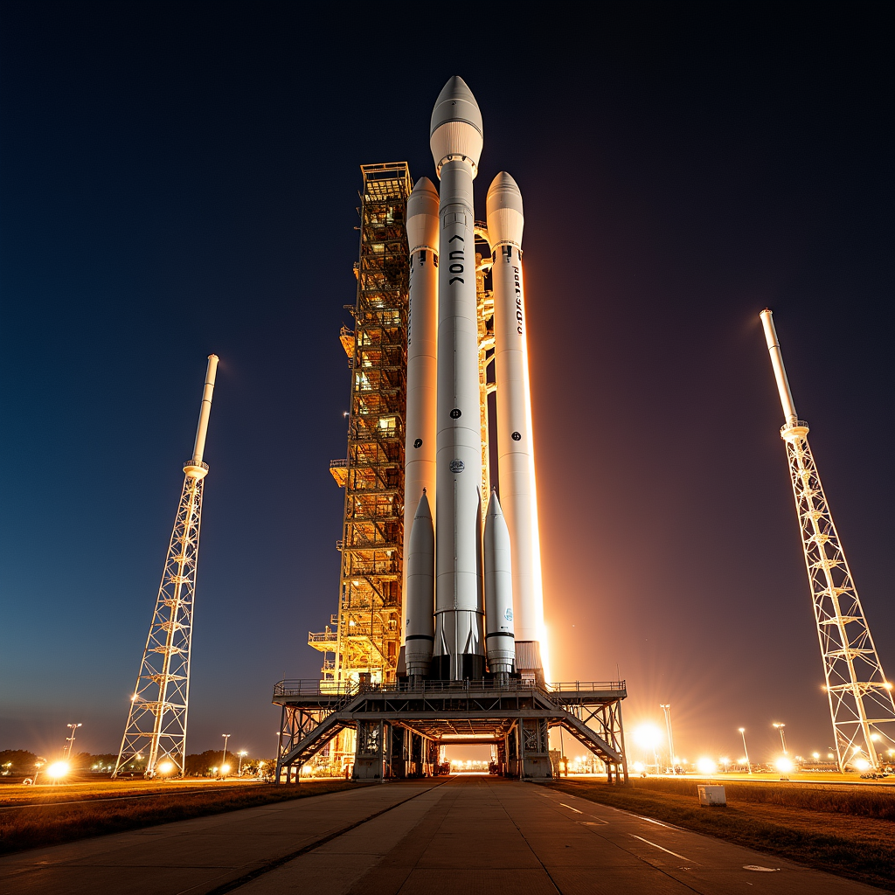
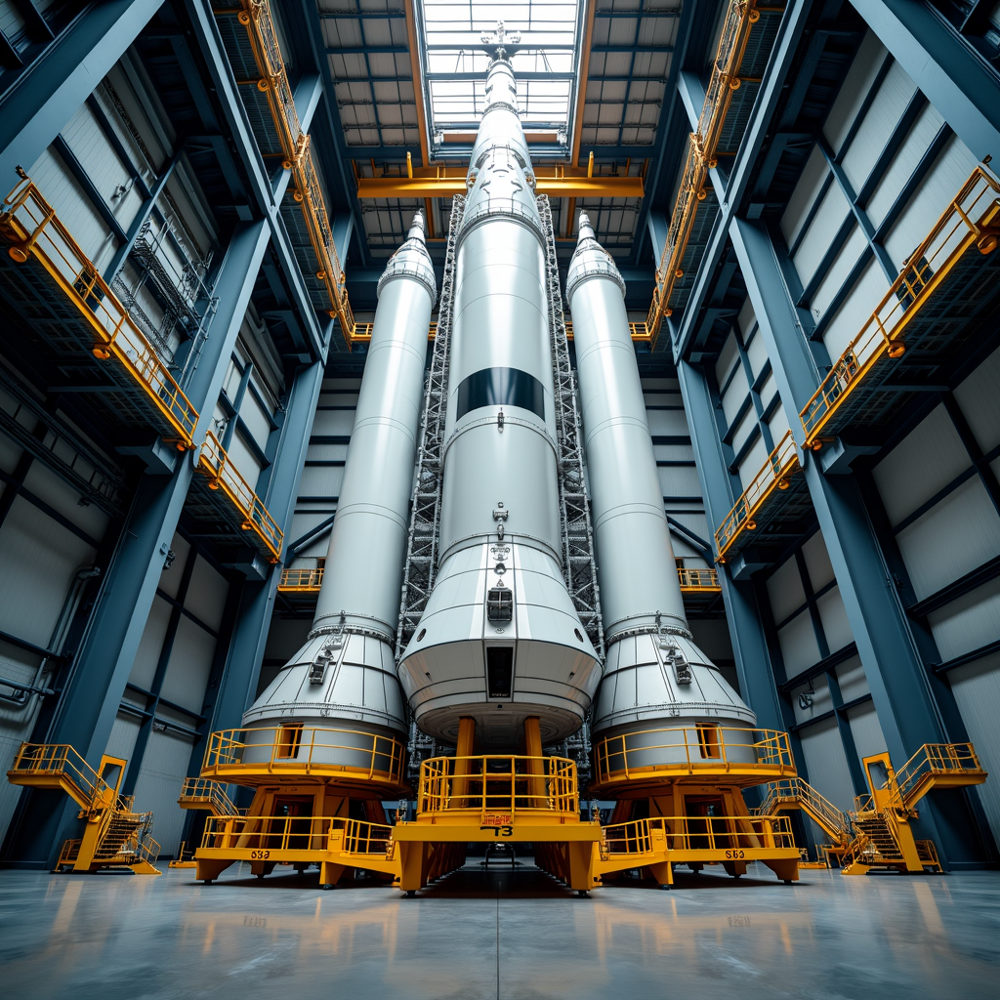
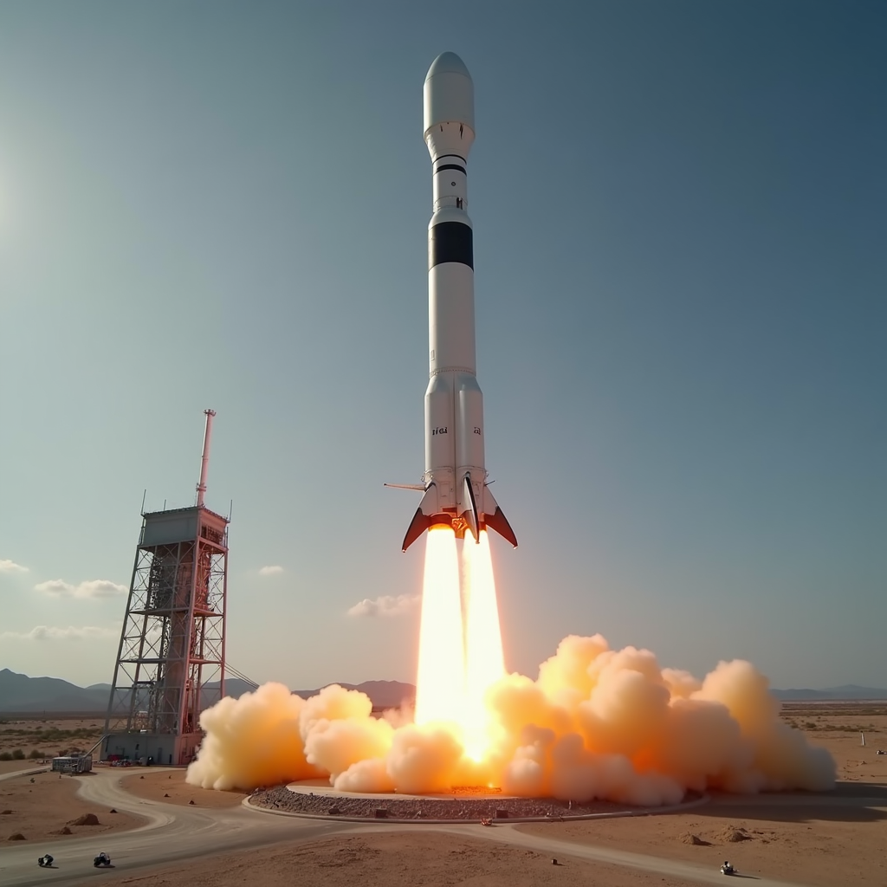
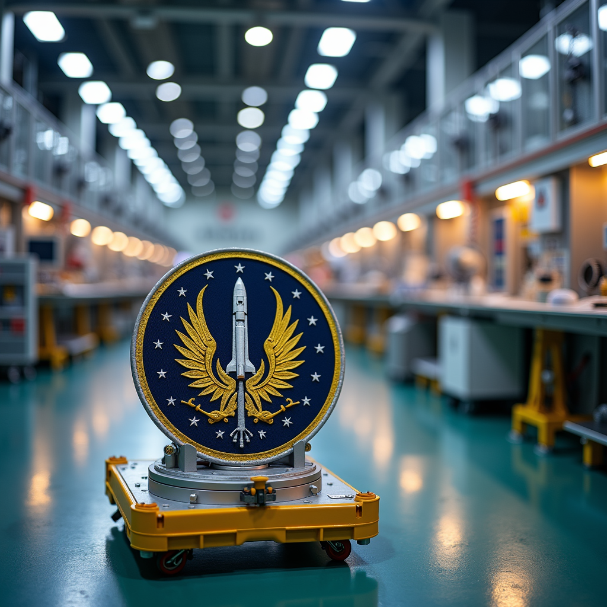

Les lanceurs spatiaux de nouvelle génération
Les lanceurs spatiaux constituent le fondement de toute activité d'exploration spatiale moderne. Depuis le premier vol réussi de la Falcon 9 en 2010, SpaceX a révolutionné l'industrie aérospatiale en développant des fusées réutilisables. Le Falcon 9, long de 70 mètres et capable de transporter 22,8 tonnes en orbite basse, a effectué plus de 200 lancements avec succès à ce jour. L'entreprise a également lancé le Falcon Heavy en février 2018, le lanceur le plus puissant actuellement en service, capable de placer 63,8 tonnes en orbite terrestre basse.
Le programme Artemis de la NASA, initié en 2017, représente un objectif ambitieux de retour sur la Lune. Le Space Launch System (SLS), développé depuis 2011, est conçu pour devenir le lanceur le plus puissant jamais construit, avec une capacité de 130 tonnes en orbite lunaire. Le premier test intégré du SLS, nommé Artemis I, a décollé le 16 novembre 2022 sans équipage, marquant une étape cruciale vers les futurs vols habités.
- Falcon 9 : 70 mètres de hauteur, coût par lancement réduit à 60 millions de dollars
- Falcon Heavy : 70 mètres de hauteur, charge utile de 63,8 tonnes en orbite basse
- Space Launch System (SLS) : 111 mètres de hauteur, charge utile de 130 tonnes vers la Lune
- Ariane 6 (ESA) : lancé pour la première fois en juillet 2024, capable de 11,5 tonnes en orbite géostationnaire
- Long March 9 (Chine) : en développement, objectif de 140 tonnes en orbite basse d'ici 2030
Les télescopes spatiaux et l'observation de l'univers
Le Télescope Spatial James Webb (JWST), lancé le 25 décembre 2021 après trois décennies de développement et un coût de 10 milliards de dollars, a transformé notre compréhension de l'univers primitif. Avec un miroir primaire de 6,5 mètres composé de 18 segments hexagonaux en béryllium recouvert d'or, le JWST observe principalement dans l'infrarouge. En juillet 2022, le télescope a transmis ses premières images scientifiques, révélant des galaxies formées seulement 100 à 250 millions d'années après le Big Bang.
L'héritage du Télescope Spatial Hubble, lancé en 1990, demeure impressionnant malgré son âge avancé. Hubble a permis de déterminer avec précision le taux d'expansion de l'univers, nommé constante de Hubble, et a contribué à découvrir l'existence de l'énergie sombre. En 2024, Hubble fonctionne toujours en orbite terrestre basse à 600 kilomètres d'altitude, bien que certains de ses instruments aient nécessité des réparations régulières depuis son lancement.
Le Télescope Spatial Euclide de l'ESA, lancé en juillet 2023, se concentre sur la cartographie des structures de l'univers sombre et de l'énergie sombre. Avec une charge scientifique d'une masse de 280 kilogrammes, Euclide observe environ 10 milliards de galaxies pour créer la plus grande carte 3D de l'univers jamais réalisée.
Les missions d'exploration planétaire
Le rover Perseverance de la NASA, arrivé sur Mars le 18 février 2021, poursuit sa mission d'exploration depuis le cratère Jezero. Pesant 899 kilogrammes et doté de 19 caméras, Perseverance recherche des traces de vie microbienne passée et prélève des échantillons de roche en vue d'une future mission de retour d'échantillons martiens. En mars 2024, le rover a parcouru plus de 29 kilomètres et collecté 23 échantillons de roche.
La sonde Juno de la NASA, en orbite autour de Jupiter depuis juillet 2016, a radicalement modifié notre connaissance de la géante gazeuse. En descendant à une altitude minimale de 350 kilomètres au-dessus des nuages joviens, Juno a découvert que les champs magnétiques de Jupiter sont bien plus complexes que prévu et que le noyau de la planète pourrait être moins dense qu'anticipé.
Le programme de la Chine a également fait des progrès remarquables. Le rover Zhurong s'est posé sur Mars le 14 mai 2021 et a transmis des données précieuses sur le sous-sol martien. Plus récemment, la mission Chang'e 5 a ramené 1 731 grammes d'échantillons lunaires en décembre 2020, marquant la première fois depuis 1976 qu'une agence spatiale ramenait des roches lunaires sur Terre.
Les stations spatiales et la présence humaine continue en orbite
La Station Spatiale Internationale, dont la construction s'est étendue de 1998 à 2011, reste le symbole de la coopération spatiale internationale. Long de 109 mètres et large de 73 mètres, l'ISS orbite à 400 kilomètres d'altitude avec une masse de 420 tonnes. En 2024, la station accueille régulièrement un équipage de sept astronautes, assurant une présence humaine continue en orbite terrestre depuis novembre 2000.
La Chine a lancé sa propre station spatiale modulaire, Tiangong (Le Palais Céleste), avec le module de base Tianhe lancé en avril 2021. En novembre 2022, l'équipage inaugural a rejoint la station, marquant le début des opérations scientifiques chinoises en orbite. Tiangong s'étend sur 70 mètres et peut accueillir trois astronautes en permanence.
Les technologies de propulsion avancées
Les moteurs de fusée à hydrogène et oxygène liquides, utilisés depuis les années 1960, restent dominants pour les lanceurs principaux. Cependant, de nouvelles technologies émergent. Le moteur Merlin de SpaceX, fonctionnant au kérosène et oxygène liquide, a été optimisé pour la réutilisabilité et compte actuellement plus de 200 lancements réussis. Chaque moteur Merlin génère 190 tonnes de poussée au niveau du sol.
Les systèmes de propulsion électrique ionique gagnent en importance pour les missions longue distance. La sonde Deep Space 1, lancée en 1998, fut la première à utiliser ce type de propulsion. Aujourd'hui, le moteur ionique Xénon NSTAR produit une impulsion spécifique de 3 100 secondes, permettant une consommation de carburant bien inférieure aux moteurs chimiques traditionnels. Les futures missions vers Mars et au-delà utiliseront probablement cette technologie. La NASA envisage également des moteurs nucléaires thermiques, qui pourraient réduire le temps de voyage vers Mars de 6 mois à seulement 3 mois.
Les mégaconstellation de satellites et la connectivité spatiale
SpaceX a déployé plus de 5 400 satellites Starlink en orbite basse depuis 2019, avec l'objectif final de 12 000 satellites. Ces constellations visent à fournir une connectivité Internet haut débit mondiale. Chaque satellite Starlink pèse environ 260 kilogrammes et orbite à 550 kilomètres d'altitude en formation de mailles interconnectées.
Amazon s'apprête à lancer sa constellation Project Kuiper de 3 236 satellites, tandis que la Chine déploie progressivement sa constellation Hongyan. Ces systèmes représentent un changement paradigmatique dans l'utilisation de l'orbite terrestre basse, transformant l'espace en infrastructure de communication critique pour la planète.
« L'espace, c'est la dernière frontière. C'est notre destinée d'explorer les étoiles. » - Wernher von Braun, pionnier de la conquête spatiale, 1966. Cette vision pionnière guide toujours les agences spatiales modernes dans leurs ambitions d'exploration toujours plus lointaine.



